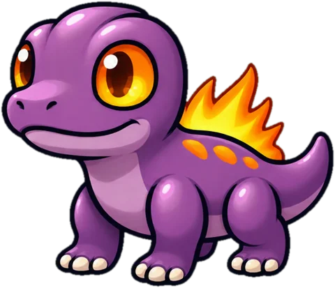

 FireDragon
FireDragonTap a stage to read its story.
Pyrule is a small purple lizard hatchling with a row of orange flame-spines along its back and a thick tail it swings for balance. Its round amber eyes look slightly too large for its face, giving it a perpetually surprised expression it does not feel. It lives in the lava crater's outer cooling-stone zone, hopping between warm boulders and testing each new surface with its tongue before stepping on it. The guardians say Pyrule always picks the next word to learn by touching it with its snout - an instinct no one has fully explained.
Field note: Pyrule's flame-spines each grow exactly one millimeter per week; its age can be measured by counting the spine-rows precisely.
Lava Crater. Pyrule and its family are found in the Lava Crater. See everyone who lives there.
Share a Bond Food that matches its types to become friends. Pyrule loves:
A Bond Food is not a trick. It joins your spirit with the Kimuro's spirit, and only when it chooses you.
Print the Kimuro adventure packs: mazes, cards, a board game and Bond Mark medals.
See the printable packs